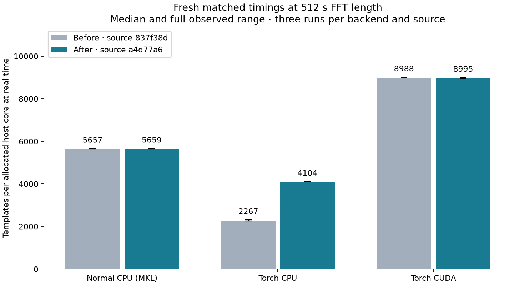
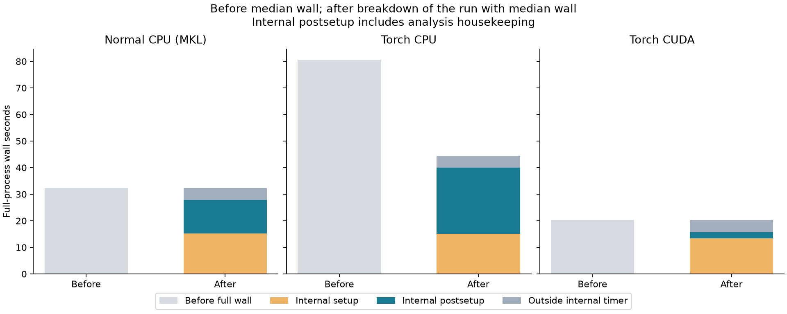
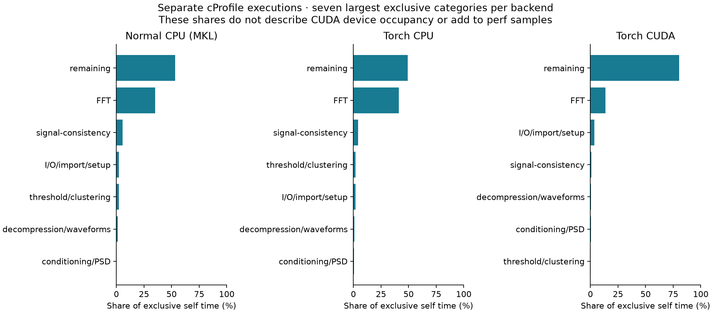

Optimized compressed-waveform search¶
Torch CPU completes the matched pycbc_inspiral workload in
44.54 seconds, down from
80.63 seconds: a
1.81x ratio of median full-process wall times.
The fresh normal CPU/MKL reference takes 32.30 seconds.
The comparison below retains all backends, three independent unprofiled runs
per backend and source, and each observed minimum–maximum range.
The optimized source is a4d77a6d1863c0515e8dace64c5609b63d40b51e; the before source is 837f38d493420043e45fb1ad210a0ccf68bacbaa.
The Normal CPU reference and matched Torch search records that earlier campaign, its normal
CPU tuning and the profiles that identified the two costs addressed here.
Only the verified unchanged normal CPU tuning choice is reused. All optimized
waveform checks, triggers, matched timings and profiles were run again.
The optimized report binds every
archived input and output to the corresponding source and execution receipt.
Matched workload and measured capacity¶
The workload contains 96 deterministic compressed templates: 64 BNS and 32 NSBH parameter choices, using aligned-spin, point-particle IMRPhenomD waveforms at 30 Hz lower cutoff and 4096 Hz sample rate. It does not establish search-bank coverage, astrophysical population throughput, tides or disruption accuracy. The bank, data, PSD settings, vetoes, clustering and 512-second FFT segments with 112/16-second start/end padding are identical across matched backends. The configuration and bank metadata retain the exact inputs.
All runs use one allocated host core on len, pinned to logical CPU 8, with
OMP_NUM_THREADS=1 and MKL_NUM_THREADS=1. The hardware is recorded in the
hardware inventory. CUDA additionally consumes
one GPU. Its rate is normalized by the allocated host core and is not a
comparison of equal CPU-only resources or a templates/GPU measurement.
Each template searches 1904 unique valid detector seconds. Completed work is
96 x 1904 = 182784 template-seconds; capacity is 182784 / full wall seconds
in templates per allocated host core at real time. Full wall time includes
startup and successful final output writing. The finite interval does not
establish steady-state throughput or confidence intervals.
Backend |
Before wall (s) |
After wall (s) |
After templates/core |
After / before capacity |
After / normal CPU capacity |
|---|---|---|---|---|---|
Normal CPU (MKL) |
32.31 (32.30–32.35) |
32.30 (32.28–32.39) |
5,659.49 (5,643.48–5,662.52) |
1.001x |
1.000x |
Torch CPU |
80.63 (79.11–80.72) |
44.54 (44.54–44.56) |
4,103.78 (4,101.60–4,104.24) |
1.810x |
0.725x |
Torch CUDA + one GPU |
20.34 (20.28–20.35) |
20.32 (20.32–20.39) |
8,994.65 (8,962.71–8,995.87) |
1.001x |
1.589x |
{kind=link}

Three unprofiled processes per backend and source; error bars span the observations.¶
Ratios are quotients of the group medians. Before and after were measured in separate run periods; they are descriptive comparisons and are not pooled or treated as paired estimates. Every raw sample appears in the report tables.
What changed and how it was qualified¶
Torch CPU compressed-waveform linear interpolation now calls the existing compiled CPU routine through shared array views when dtype, storage, aliasing and differentiation constraints permit it. It retains Torch version tracking and the generic device fallback. No compiled interpolation kernel was edited. All 288 CPU template/grid cases are bitwise equal to normal CPU; all 288 CUDA cases remain bitwise equal to the frozen earlier Torch CUDA implementation.
The qualified single-thread search inverse FFT sizes 1048576, 2097152 and 4194304 now use retained double-precision MKL input/output workspaces. The 108-case matrix spans three sizes, four seeds, three patterns and three scales. Every enabled case is bitwise equal to the explicitly promoted MKL reference, with relative L2 and maximum absolute error no worse than the original FFTW single-precision reference. The direct single-precision route remains limited to its previously qualified 32768 size; the larger direct-single alternative failed the established error budget in part of the exploratory matrix. The double-precision workspaces require extra retained memory; the full-run peak RSS figures below include it. Other thread counts retain their fallback.
Inverse-FFT qualification and dispatch decision, full matrix and compressed-bank parity retain the checks.
Backend |
Internal total (s) |
Setup (s) |
Postsetup (s) |
Peak RSS (MiB) |
|---|---|---|---|---|
Normal CPU (MKL) |
27.78 |
15.27 |
12.52 |
1204.72 |
Torch CPU |
40.00 |
15.14 |
24.85 |
1204.69 |
Torch CUDA + one GPU |
15.65 |
13.40 |
2.25 |
1469.20 |
{kind=link}

Before median wall and the after run with median wall, split using its actual internal timer.¶
Internal run_time excludes early imports/startup and final HDF writing.
Setup/postsetup use setup_time_fraction; postsetup includes analysis
housekeeping and is not an isolated steady-filter interval.
Separate profiles¶
Seven fresh profiled runs use the selected workload: cProfile and native
perf cycles:u for all three backends, plus a Torch device trace for CUDA.
Their elapsed times are instrumented observations and are excluded from
capacity summaries. cProfile shares use exclusive self seconds, native shares
use sampled user-space cycles, and CUDA shares use profiler-visible device
event durations. These denominators cannot be added into one timeline or
interpreted as GPU occupancy. Nested cumulative call times are not additive.
Backend |
Profile |
Wall (s) |
|---|---|---|
Normal CPU (MKL) |
cprofile |
35.63 |
Normal CPU (MKL) |
perf |
35.15 |
Torch CPU |
cprofile |
48.20 |
Torch CPU |
perf |
47.18 |
Torch CUDA + one GPU |
cprofile |
23.99 |
Torch CUDA + one GPU |
perf |
23.14 |
Torch CUDA + one GPU |
torchprofile |
44.80 |
{kind=link}

Exclusive cProfile categories in the optimized runs; each backend has its own self-time denominator.¶
The profile category table and native symbols retain all categories and sample denominators. The optimized profile interpretation records interpolation falling from 26.62 to 0.44 seconds and inverse FFTs from 26.84 to 17.82 seconds. These two disjoint call paths explain 98.48% of the profiled runtime reduction. The remaining inverse-FFT gap accounts for 85.12% of the after-profile gap to normal CPU. The qualified double-precision MKL workspace includes promotion and conversion; their costs have not been isolated individually. The earlier profile interpretation attributes the original interpolation and inverse-FFT costs to its explicitly recorded source.
Scientific validation and reproduction¶
All 10 report gates pass. The 19 campaign cases have 18
passing strict trigger comparisons against the selected normal CPU reference.
The unchanged trigger budgets are relative tolerance 1e-4, absolute tolerance
1e-5, phase tolerance 1e-4 radians and normalization relative tolerance
1e-5. The independent checks cover 288 waveform/PSD comparisons, 36 boundary
injections and 576 compressed-bank parity cases. The source unit run records:
470 passed, 69 skipped, 22 warnings, 8 subtests passed in 25.98s.
The scientific acceptance binds the individual checks and their unchanged budgets. The unit receipt identifies the 22-file test command; source manifest records the four-file source change, unchanged native binaries and the normal CPU implementation audit. See reproduction instructions for reconstruction and replay from the immutable bundles. To regenerate the optimized report into a new directory, after restoring transported raw files:
python build-hotpath-report-v6.py --root . --source-manifest-sha256 f62d2e580fed9ba514a3df724546dc63c306b6805289c2ce37896325bcb95b2b --output-dir optimized-report-rebuilt
The figure manifest
pins the archive, before/after sources, validated report, builder and image hashes.
Earlier component, inference and Triton timings retain their original scope in
Torch benchmark results and Benchmark details and reproduction.